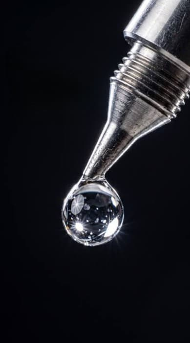
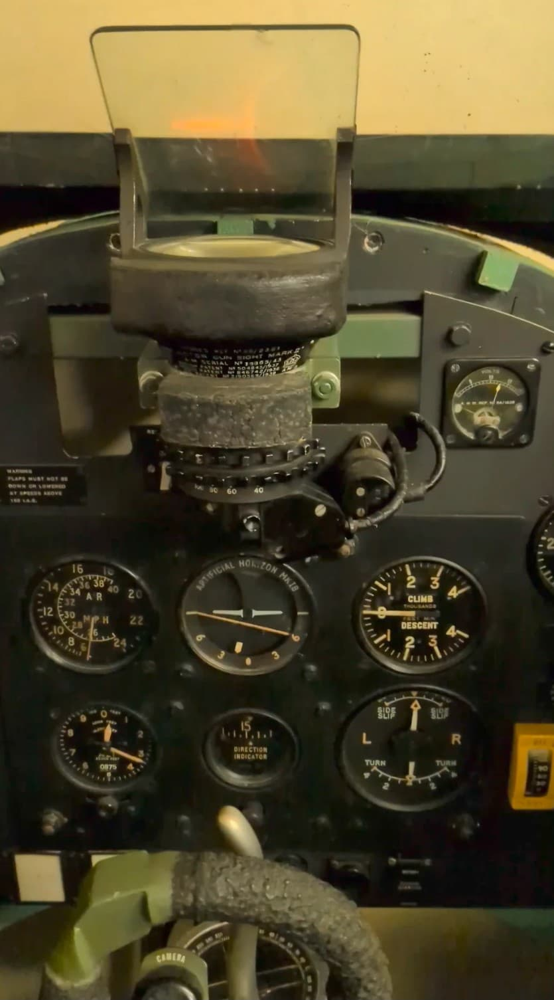
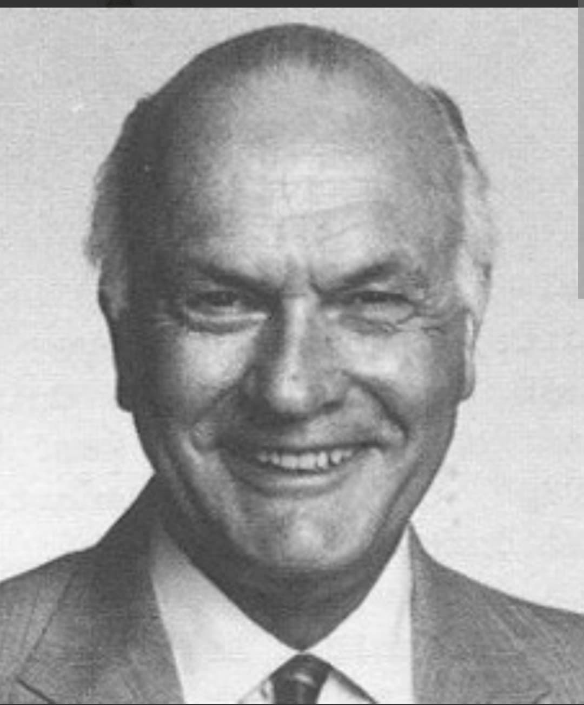

1942 • De l'échec de la recherche militaire sur les viseurs d'avions au succès mondial de la cyanoacrylate

Aujourd'hui présente dans tous les tiroirs et boîtes à outils du monde entier, la **Super Glue** (ou colle cyanoacrylate) est le fruit d'une découverte accidentelle réalisée au plus fort de la Seconde Guerre mondiale.
Conçue initialement par un chercheur américain qui tentait d'élaborer un plastique synthétique ultra-transparent pour les viseurs de précision de l'aviation militaire, cette matière fut dans un premier temps jugée inutilisable en raison de son adhésion instantanée et irréversible.
En 1942, le chimiste américain **Harry Coover**, travaillant pour la société *Eastman Kodak* sous contrat avec l'armée américaine, recherche un matériau synthétique capable de fabriquer des visières d'avions et des viseurs de fusils transparents et incassables.
Au cours de ses expériences sur les monomères de **cyanoacrylate**, il isole une substance chimique d'une clarté parfaite. Cependant, le produit pose un problème majeur : au moindre contact avec l'humidité ambiante ou de la peau, il colle instantanément à tout ce qu'il touche, bloquant irrémédiablement le matériel d'expérimentation.
Considérée comme un échec technique pour la fabrication de viseurs optiques, la formule est rapidement abandonnée et remisée au placard.

Exemple d'optique militaire : Viseur d'avion de chasse (Reflector Gun Sight Mk II). C'est pour fabriquer des verres et plastiques transparents destinés à ces viseurs que la cyanoacrylate fut testée en 1942.
Neuf ans plus tard, en 1951, alors qu'il travaille sur les verrières résistantes aux hautes températures pour les avions de chasse à réaction, Harry Coover et son collègue Fred Joyner réexaminent la famille des cyanoacrylates.
Lorsqu'ils appliquent une goutte de cette substance entre deux prismes en verre pour mesurer l'indice de réfraction, les deux lentilles se soudent immédiatement de façon incassable. Coover réalise alors le potentiel commercial immense de cette colle qui n'a besoin ni de chaleur, ni de pression pour durcir.
En 1958, le produit est commercialisé pour la première fois sous le nom de **« Eastman 910 »**, avant de devenir mondialement célèbre sous le nom de **Super Glue**.

Dr. Harry Coover (1917–2011), l'inventeur américain de la cyanoacrylate (Super Glue).
Durant la guerre du Viêtnam dans les années 1960, les propriétés découverts pendant la Seconde Guerre mondiale connaissent une application médicale spectaculaire. Un spray médical à base de cyanoacrylate est distribué aux chirurgiens du contingent américain.
Vaporisée directement sur les blessures béantes et les hémorragies internes des soldats au combat, la colle permet de colmater instantanément les organes touchés et de stopper le saignement, sauvant ainsi des milliers de GI's avant leur évacuation en hélicoptère.
Récompensé par la *National Medal of Technology and Innovation* remise par le président américain en 2010, le Dr Harry Coover est resté dans l'histoire comme « le père de la Super Glue ».
Cette invention est l'un des exemples les plus marquants de la manière dont la recherche militaire de la Seconde Guerre mondiale a généré des applications civiles inattendues, transformant un « échec de laboratoire » en un objet incontournable du quotidien.
Page du Musée HOP WW2 – Section Mémoire & Symboles Militaires